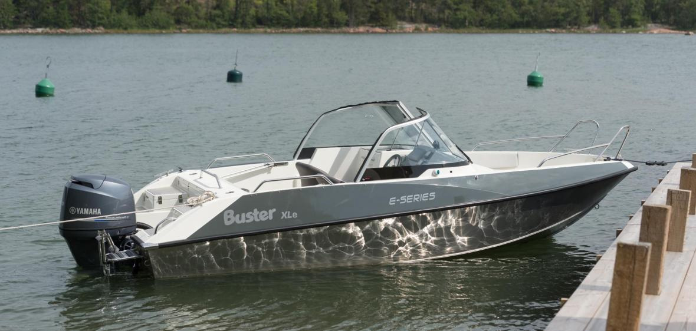

Катер Buster XLe (Бустер XLe)
Buster XLe (Бустер XLe) – стильная и практичная, настоящая Buster Е! Buster XLe (Бустер XLe) – новая модель серии Е, на базе самого популярного корпуса Buster XL. В модели XLe тесно переплетаются 50-летний опыт изготовления алюминиевых корпусов и эстетические формы, практичность и многофункциональность использования внутреннего пространства. Высокое, ветровое стекло и стационарная дверь между консолями надёжно защищают путешественников от ветра и брызг. Удивительно просторный и лёгкий в использовании ящик для хранения тента упрощает повседневные будни путешественников в любую погоду.
Buster XLe (Бустер XLe) – отличный выбор для яхтсменов, которые ценят универсальность, а также при выборе лодки принимают во внимание экономичность и стильность. Ветровое закалённое стекло с очистителем обеспечивают дополнительный комфорт и безопасность. Достаточно тихий корпус, большое количество багажных отсеков, якорные боксы на корме – всё это повышают комфортабельность модели. Нескользящее покрытие днища серого цвета – практично для любого использования.
Buster XL, по результатам опроса среди читателей известного финского журнала водно-моторной техники №1, 06/2012, назван финской лодкой-мечтой. Широкий диапазон использования моторов, и объёмный, стационарный топливный бак 138 л. обеспечивают высокую мощность и одновременно экономичность. Buster XLe (Бустер XLe), как и прежде гарантирует обещанный нами безупречный выбор, и одновременно добавляет элегантность.
Технические характеристики катера:
| Параметр | Buster XLe |
|
Длина |
5.65 м |
|
Ширина |
2.25 м |
|
Масса (Без двигателя) |
695 кг |
|
Вместимость |
7 человек |
|
Рекоменд. мощность двигателя |
60 - 100 л.с. |
|
Емкость топливного бака |
138 л |
|
Осадка при полной нагрузке |
0,4 м |
|
Максимальная скорость |
36 узлов |
|
V-угол дна |
19° |
Стандартное оборудование:
- Гидравлическое рулевое управление
- Штрурвал с регулируемым углом наклона
- Консоль управления, ветровое стекло, закалённое
- Консоль левая, ветровое стекло, закалённое
- Очиститель ветрового стекла, правый
- Стационарная дверь между консолями
- Закрывающиеся багажные отсеки (система запирания замков одним ключом)
- Комплект мягких подушек
- Тент на корму
- Транцевые плиты с джойстиковым управлением
- Встроенный ящик для хранения тента
- Боковое сиденье
- Мягкие кресла Offshore 2шт. с чехлами
- Якорные боксы на корме, слева и справа
- Забортный трап
- Леерные ограждения, крепления и кнехты (нержавеющая сталь)
- Огнетушитель
- Чехол для аккумулятора
- Центральный выключатель с автоматическими предохранителями
- Автоматическая трюмная помпа
- Стационарный топливный бак
- Навигационные огни
- Мачта, съёмная
- Электрический разъём 12V
- Самоосушающийся кокпит
Дополнительное оборудование:
- Тент стояночный
- Штанга для буксировки вейкбордиста
- NAVI 7*
*Дополнительные опции устанавливаемые на заводе-изготовителе
NAVI 7: Картплоттер Garmin 720s, компас, датчик эхолота с креплением
{kind=link}
{kind=link}
{kind=link}
{kind=link}
{kind=link}
{kind=link}
{kind=link}
{kind=link}